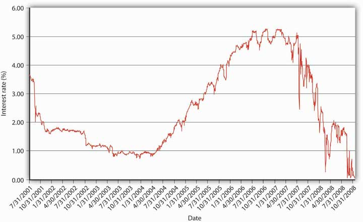
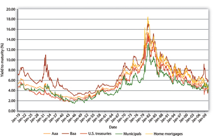
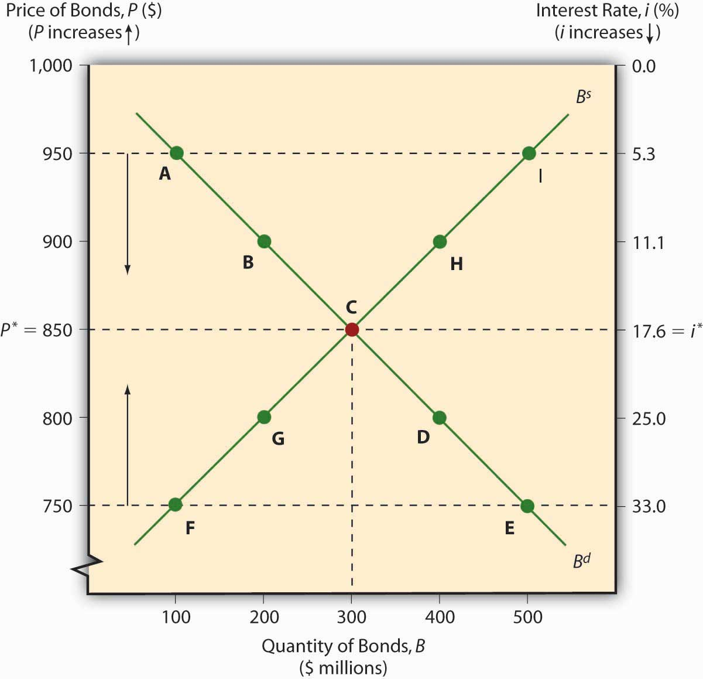
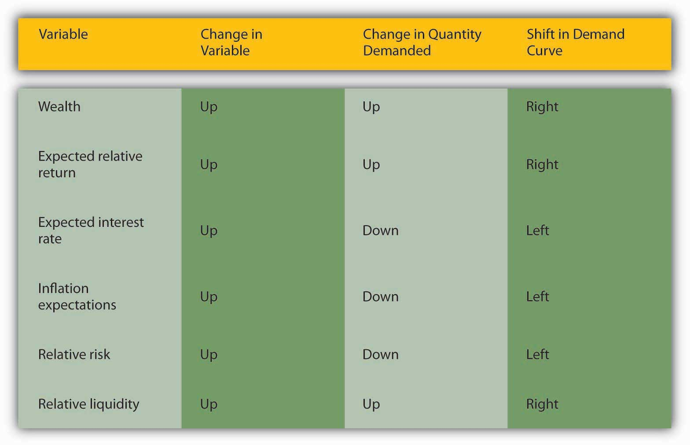
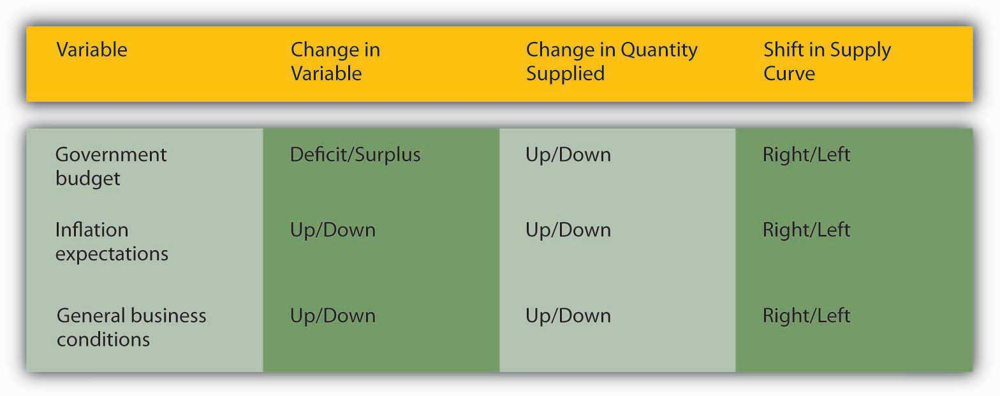
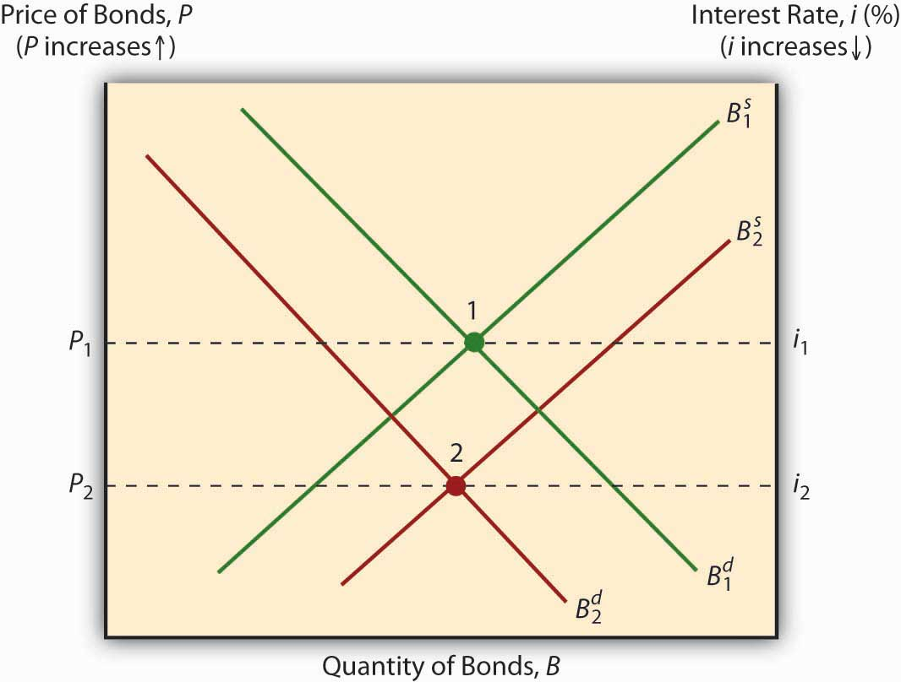
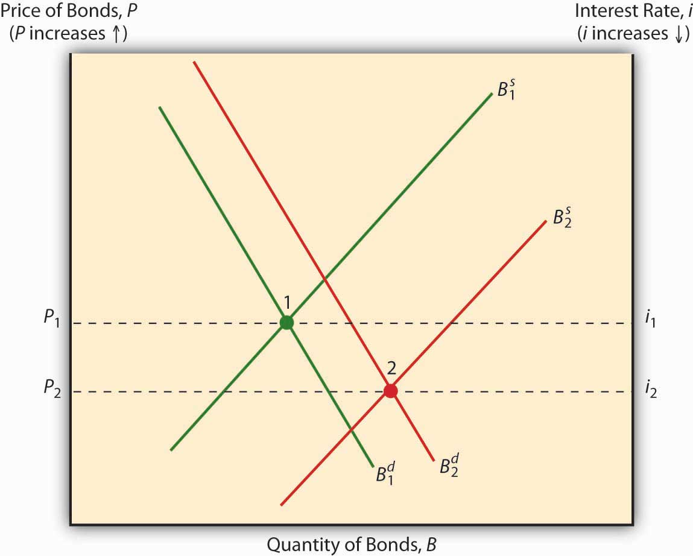
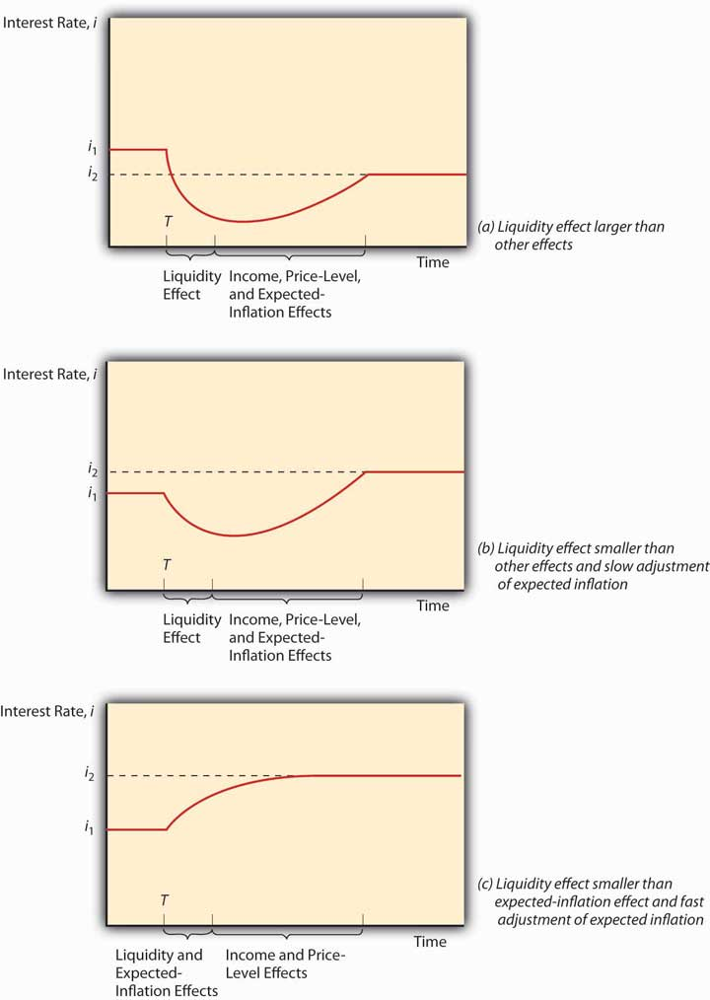

By the end of this chapter, students should be able to
If you followed the gist of Chapter 4 "Interest Rates", you learned (we hope!) about the time value of money, including how to calculate future value (FV), present value (PV), yield to maturity, current yield (the yield to maturity of a perpetuity), rate of return, and real interest rates. You also learned that a change in the interest rate has a profound effect on the value of assets, especially bonds and other types of loans, but also equities and derivatives. (In this chapter, we’ll use the generic term bonds throughout.) That might not be a very important insight if interest rates were stable for long periods. The fact is, however, interest rates change monthly, weekly, daily, and even, in some markets, by the nanosecond. Consider Figure 5.1 "Yields on one-month U.S. Treasury bills, 2001–2008" and Figure 5.2 "Yields on one-month U.S. Treasury bills, March 2008". The first figure shows yields on one-month U.S. Treasury bills from 2001 to 2008, the second shows a zoomed-in view on just March 2008. Clearly, there are long-term secular trends as well as short-term ups and downs.
Figure 5.1 Yields on one-month U.S. Treasury bills, 2001–2008
Figure 5.2 Yields on one-month U.S. Treasury bills, March 2008

You should now be primed to ask, Why does the interest rate fluctuate? In other words, what causes interest rate movements like those shown above? In this aptly named chapter, we will examine the economic factors that determine the nominal interest rate. We will ignore, until the next chapter, the fact that interest rates differ on different types of securities. In this chapter we will concern ourselves only with the general level of interest rates, which economists call “the” interest rate. As Figure 5.3 "The risk structure of interest rates in the United States, 1919–2010" and Figure 5.4 "The term structure of interest rates in the United States, 1960–2010" show, interest rates tend to track each other, so by focusing on what makes one interest rate move, we have a leg up on making sense of movements in the literally thousands of interest rates out there in the real world.
Figure 5.3 The risk structure of interest rates in the United States, 1919–2010
Figure 5.4 The term structure of interest rates in the United States, 1960–2010

The ability to forecast changes in the interest rate is a rare but profitable gift. Professional interest rate forecasters are seldom right on the mark and often are far astray, and half the time they don’t even get the direction (up or down) right.www.finpipe.com/intratgo.htm That’s what we’d expect if their forecasts were determined by flipping a coin! Therefore, we don’t expect you to be able to predict changes in the interest rate, but we do expect you to be able to post-dict them. In other words, you should be able to narrate, in words and appropriate graphs, why past changes occurred. You should also be able to make predictions by invoking the ceteris paribus assumption.
The previous graphs reveal that interest rates generally trended downward from 1920 to 1945, then generally rose until the early 1980s, when they began trending downward again through 2011. During the 1920s, general business conditions were favorable. In other words, taxes and regulations were relatively low, while confidence in public policies was high. President Calvin Coolidge summed this up when he said, “The business of America is business.” Therefore, the demand for bonds increased (the demand curve shifted right), pushing prices higher and yields lower. The 1930s witnessed the Great Depression, an economic recession of unprecedented magnitude that dried up profit opportunities for businesses and hence shifted the supply curve of bonds hard left, further increasing bond prices and depressing yields. (If the federal government had not run budget deficits some years during the depression, the interest rate would have dropped even further.) During World War II, the government used monetary policy to keep interest rates low. After the war, that policy came home to roost as inflation began to become, for the first time in American history, a perennial fact of life. Contemporaries called it “creeping inflation.” A higher price level, of course, put upward pressure on the interest rate (think Fisher Equation). The unprecedented increase in prices during the 1970s (what some have called the “Great Inflation”) drove nominal interest rates higher still. Only in the early 1980s, after the Federal Reserve mended its ways (a topic to which we will return) and brought inflation under control, did the interest rate begin to fall. Positive geopolitical events in the late 1980s and early 1990s, namely, the end of the Cold War and the birth of what we today call “globalization,” also helped to reduce interest rates by rendering the general business climate more favorable (thus pushing the demand curve for bonds to the right, bond prices upward, and yields downward). Pretty darn neat, eh?
The keys to understanding why “the” interest rate changes over time are simple price theory (supply and demand) and the theory of asset demand. Like other types of goods, bonds and other financial instruments trade in markets. The demand curve for bonds, as for most goods, slopes downward; the supply curve slopes upward in the usual fashion. There is little mystery here. The supply curve slopes upward because, as the price of bonds increases (which is to say, as their yield to maturity decreases), holding the bonds’ face values and coupons and the rest of the world constant, borrowers (sellers of securities) will supply a higher quantity, just as producers facing higher prices for their wares will supply more cheese or automobiles. As the price of bonds falls, or as the yield to maturity that sellers and borrowers offer increases, sellers and borrowers will supply fewer bonds. (Why sell ’em if they aren’t going to fetch much?) When they can obtain funds cheaply, companies will be eager to borrow to expand because it is more likely that it will be profitable to do so. When funds are dear, companies will not see many positive present net value projects to pursue.
The demand curve for bonds slopes downward for similar reasons. When bond prices are high (yields to maturity are low), few will be demanded because investors (buyers) will find other, more lucrative uses of their money. As bond prices fall (bond yields increase), investors will want more of the increasingly good deals (better returns) that they offer.
The market price of a bond and the quantity that will be traded is determined, of course, by the intersection of the supply and demand curves, as in Figure 5.5 "Equilibrium in the bond market". The equilibrium price prevails in the market because, if the market price were temporarily greater than p*, the market would be glutted with bonds. In other words, the quantity of bonds supplied would exceed the quantity demanded, so sellers of bonds would lower their asking price until equilibrium was restored. If the market price temporarily dipped below p*, excess demand would prevail (the quantity demanded would exceed the quantity supplied), and investors would bid up the price of the bonds to the equilibrium point.
Figure 5.5 Equilibrium in the bond market
As with other goods, the supply and demand curves for bonds can shift right or left, with results familiar to principles (“Econ 101”) students. If the supply of bonds increases (the supply curve shifts right), the market price will decrease (the interest rate will increase) and the quantity of bonds traded will increase. If the supply of bonds decreases (the supply curve shifts left), bond prices increase (the interest rate falls) and the equilibrium quantity decreases. If the demand for bonds falls (the demand curve shifts left), prices and quantities decrease (and the interest rate increases). If demand increases (the demand curve shifts right), prices and quantities rise (and the interest rate falls).
Shifting supply and demand curves around can be fun, but figuring out why the curves shift is the interesting part. (Determining the shape and slope of the curves is interesting too, but these details will not detain us here.) Movements along the curve, or why the supply curve slopes upward and the demand curve downward, were easy enough to grasp. Determining why the whole curve moves, why investors are willing to buy more (or fewer) bonds, or why borrowers are willing to sell more (or fewer) bonds at a given price is a bit more involved. Let’s tackle demand first, then we will move on to supply.
Wealth determines the overall demand for assets. An asset (something owned) is any store of value, including financial assets like money, loans (for the lender), bonds, equities (stocks), and a potpourri of derivativeswww.margrabe.com/Dictionary/DictionaryAC.html#sectA and nonfinancial assets like real estate (land, buildings), precious metals (gold, silver, platinum), gems (diamonds, rubies, emeralds), hydrocarbons (oil, natural gas) and (to a greater or lesser extent, depending on their qualities) all other physical goods (as opposed to bads, like pollution, or freebies, like air). As wealth increases, so too does the quantity demanded of all types of assets, though to different degrees. The reasoning here is almost circular: if it is to be maintained, wealth must be invested in some asset, in some store of value. In which type of asset to invest new wealth is the difficult decision. When determining which assets to hold, most economic entities (people, firms, governments) care about many factors, but for most investors most of the time, three variables—expected relative return, risk, and liquidity—are paramount.
Expected relative return is the ex ante (before the fact) belief that the return on one asset will be higher than the returns of other comparable (in terms of risk and liquidity) assets. Return is a good thing, of course, so as expected relative return increases, the demand for an asset also increases (the entire demand curve shifts right). That can happen because the expected return on the asset itself increases, because the expected return on comparables decreases, or because of a combination thereof. Clearly, two major factors will affect return expectations and hence the demand for certain financial assets, like bonds: expected interest rates and, via the Fisher Equation, expected inflation. If the interest rate is expected to increase for any reason (including, but not limited to, expected increases in inflation), bond prices are expected to fall, so the demand will decrease (the entire demand curve will shift left). Conversely, if the interest rate is thought to decrease for any reason (including, but not limited to, the expected taming of inflation), bond prices are expected to rise, so the entire demand curve will shift right.
Overall, though, calculating relative expected returns is sticky business that is best addressed in more specialized financial books and courses. If you want an introduction, investigate the capital asset pricing model (CAPM)www.valuebasedmanagement.net/methods_capm.html;www.moneychimp.com/articles/valuation/capm.htm and the arbitrage pricing theory (APT).moneyterms.co.uk/apt Calculating return is not terribly difficult and neither is comparing returns among a variety of assets. What’s tricky is forecasting future returns and making sure that assets are comparable by controlling for risk, among other things. Risk is the uncertainty of an asset’s returns. It comes in a variety of flavors, all of them unsavory, so as it increases, the demand decreases (the entire curve shifts left), ceteris paribus. Two major types of risk are default risk (aka credit risk), the chance that a financial contract will not be honored, and interest rate risk, the chance that the interest rate will rise and hence decrease a bond or loan’s price. An offsetting risk is called reinvestment risk, which bites when the interest rate decreases because coupon or other interest payments have to be reinvested at a lower yield to maturity. To be willing to take on more risk, whatever its flavor, rational investors must expect a higher relative return. Investors who require a much higher return for assuming a little bit of risk are called risk-averse. Those who will take on much risk for a little higher return are called risk-loving, risk-seekers, or risk-tolerant. (Investors who take on more risk without compensation are neither risk-averse nor risk-tolerant, but rather irrational.) Risks can be idiosyncratic (pertinent to a particular company), sectoral (pertinent to an entire industry, like trucking or restaurants), or systemic (economy-wide). Liquidity risk occurs when an asset cannot be sold as quickly or cheaply as expected, be it for idiosyncratic, sectoral, or systemic reasons. This, too, is a serious risk because liquidity, or (to be more precise) liquidity relative to other assets, is the third major determinant of asset demand. Because investors often need to change their investment portfolioThe set of financial and other investments or assets held by an economic entity. or dis-save (spend some of their wealth on consumption), liquidity, the ability to sell an asset quickly and cheaply, is a good thing. The more liquid an asset is, therefore, the further right the demand curve for it will shift, all else being equal.
During the financial crisis that began in 2007, the prices of a certain type of bond collateralized by subprime mortgages, long-term loans collateralized with homes and made to relatively risky borrowers, collapsed. In other words, their yields had to increase markedly to induce investors to own them. They dropped in price after investors realized that the bonds, a type of asset-backed security (ABS), had much higher default rates and much lower levels of liquidity than they had previously believed. Figure 5.6 "Variables that influence demand for bonds" summarizes the chapter discussion so far.
Figure 5.6 Variables that influence demand for bonds
So much for demand. Why does the supply curve for bonds shift to and fro? There are many reasons, but the three main ones are government budgets, inflation expectations, and general business conditions. When governments run budget deficits, they often borrow by selling bonds, pushing the supply curve rightward and bond prices down (yields up), ceteris paribus. When governments run surpluses, and they occasionally do, believe it or not, they redeem and/or buy their bonds back on net, pushing the supply curve to the left and bond prices up (yields down), all else being equal. (For historical time series data on the U.S. national debt, which was usually composed mostly of bonds, browse http://www.economagic.com/em-cgi/data.exe/treas/pubdebt.)
You are a copyeditor for Barron’s. What, if anything, appears wrong in the following sentence? How do you know?
“Recent increases in the profitability of investments, inflation expectations, and government surpluses will surely lead to increased bond supplies in the near future.”
Government deficits, not surpluses, lead to increased bond supplies.
The expectation of higher inflation, other factors held constant, will cause borrowers to issue more bonds, driving the supply curve rightward, and bond prices down (and yields up). The Fisher Equation, ir = i – πe, explains this nicely. If the inflation expectation term πe increases while nominal interest rate i stays the same, the real interest rate ir must decrease. From the perspective of borrowers, the real cost of borrowing falls, which means that borrowing becomes more attractive. So they sell bonds.
Borrowing also becomes more attractive when general business conditions become more favorable, as when taxes and regulatory costs decrease or the economy expands. Although individuals sometimes try to borrow out of financial weakness or desperation, relatively few such loans are made because they are high risk. Most economic entities borrow out of strength, to finance expansion and engage in new projects they believe will be profitable. So when economic prospects are good, taxes are low, and regulations are not too costly, businesses are eager to borrow, often by selling bonds, shifting the supply curve to the right and bond prices down (yields up). Figure 5.7 "Variables that determine the supply of bonds" summarizes the chapter discussion so far.
Figure 5.7 Variables that determine the supply of bonds
As Yoda might say, “Pause here, we must” to make sure we’re on track.www.yodaspeak.co.uk/index.php Try out these questions until you are comfortable. Remember that the ceteris paribus condition holds in each.
If you’ve already figured out that expected inflation will decrease bond prices, and increase bond yields, by both shifting the supply curve to the right and the demand curve to the left, as in Figure 5.8 "Expected inflation and bond prices" , kudos to you!
Figure 5.8 Expected inflation and bond prices
If you noticed that the response of bond prices and yields to a business cycle expansion is indeterminate, booya! As noted above, a boom shifts the bond supply curve to the right by inducing businesses to borrow and thus take advantage of the bonanza. Holding demand constant, that action reduces bond prices (raises the interest rate). But demand does not stay constant because economic expansion increases wealth, which increases demand for bonds (shifts the curve to the right), which in turn increases bond prices (reduces the interest rate). The net effect on the interest rate, therefore, depends on how much each curve shifts, as in Figure 5.9 "Business cycle expansion and bond prices".
Figure 5.9 Business cycle expansion and bond prices
In reality, the first scenario is the one that usually wins out: during expansions, the interest rate usually rises, and during recessions, it always falls. For example, the interest rate fell to very low levels during the Great Depression (an almost worldwide downturn in economic output in the early 1930s) and during Japan’s extended economic funk (period of low to no increase in per capita incomes) in the 1990s.www.bloomberg.com/apps/news?pid=10000101&refer=japan&sid=a28sELjm9W04
We’re almost there! At first blush, increasing the money supply would seem to decrease interest rates through what is called a liquidity effect: more money in circulation means more money to lend and hence, like more apples or carrots in a market, lower prices. Reality, however, is not so simple when it comes to the money supply. Government entities regulate the money supply and have a habit of expanding it because doing so prudently increases economic growth, employment, incomes, and other good stuff. Unfortunately, expanding the money supply also causes prices to rise almost every year, with no reversion to earlier levels. When the money supply increases, incomes rise, prices increase, and people expect inflation to occur. Each of those three effects, called the income, price level, and expected inflation effects, respectively, causes the interest rate to rise. Higher incomes mean more demand for bonds and higher prices, and expected inflation means bondholders need to receive a higher interest rate to offset losses in money’s purchasing power (the Fisher Effect). When the money supply increases, the liquidity effect, which lowers the interest rate, battles those three countervailing effects. Sometimes, the liquidity effect wins. When the money supply increases (or increases faster than usual), the liquidity effect overpowers the countervailing effects, and the interest rate declines and stays below the previous level. Sometimes, often in modern industrial economies with independent central banksA monetary authority that is controlled by public-interested technocrats rather than by self-interested politicians., the liquidity effect prevails at first and the interest rate declines, but then incomes rise, inflation expectations increase, and the price level actually rises, eventually causing the interest rate to increase above the original level. Finally, sometimes, as in modern undeveloped countries with weak central banking institutions, the expectation of inflation is so strong and so quick that it overwhelms the liquidity effect, driving up the interest rate immediately. Later, after incomes and the price level increase, the interest rate soars yet higher. Figure 5.10 "Money supply growth and nominal interest rates" summarizes this discussion graphically.
Figure 5.10 Money supply growth and nominal interest rates
Famed monetary economist and Nobel laureate Milton Friedman was a staunch supporter of free markets and a critic of changes in the price level, particularly the rampant inflation of the 1970s. He argued that government monetary authorities ought to increase the money supply at some known, constant rate. If Friedman was so worried about price level changes, why didn’t he advocate permanently fixing the money supply (MS)?www.econlib.org/library/Enc/bios/Friedman.html
By fixing the MS, the interest rate would have risen higher and higher as the demand for money increased due to higher incomes and even simple population growth. Only deflation (decreases in the price level) could have countered that tendency, but deflation, Friedman knew, was as pernicious as inflation. A constant rate of MS growth, he believed, would keep the price level relatively stable and interest rate fluctuations less frequent or severe.
Constable, Simon, and Robert E. Wright. The Wall Street Journal Guide to the 50 Economic Indicators That Really Matter: From Big Macs to “Zombie Banks,” the Indicators Smart Investors Watch to Beat the Market. New York: HarperCollins Business, 2011.
Evans, Michael. Practical Business Forecasting. Hoboken, NJ: John Wiley and Sons, 2002.
Friedman, Milton. The Optimum Quantity of Money. Piscataway, NJ: Aldine Transaction, 2005.